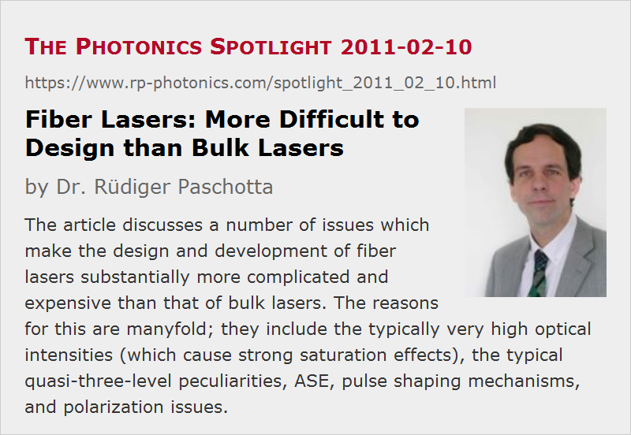

Fiber Lasers: More Difficult to Design than Bulk Lasers
Posted on 2011-02-10 as a part of the Photonics Spotlight (available as e-mail newsletter!)
Permanent link: https://www.rp-photonics.com/spotlight_2011_02_10.html
Author: Dr. Rüdiger Paschotta, RP Photonics Consulting GmbH
Abstract: The article discusses a number of issues which make the design and development of fiber lasers substantially more complicated and expensive than that of bulk lasers. The reasons for this are manyfold; they include the typically very high optical intensities (which cause strong saturation effects), the typical quasi-three-level peculiarities, ASE, pulse shaping mechanisms, and polarization issues.
Ref.: encyclopedia articles on fiber lasers, laser design, laser development

Fundamentally, the physical effects underlying the laser operation in fiber lasers are exactly the same as in bulk lasers: amplification via stimulated emission, gain saturation, amplified spontaneous emission, etc. Therefore, one might expect that designing fiber lasers can be based on essentially the same methods as the design of bulk lasers, simply with accordingly adjusted parameters. That expectation, however, turns out to be totally wrong. For a number of reasons, some of which are discussed in the following, fiber lasers behave differently in many respects, and their design involves complications which are usually not encountered in bulk lasers.
Operation with High Optical Intensities
Due to the small effective mode area of the fiber core, it is easy to achieve high optical intensities driving the laser-active ions. This is nice in some situations; for example, it becomes relatively easy to efficiently operate lasers even on “difficult” laser transitions. For example, one can build quite efficient upconversion fiber lasers. Also, the quasi-three-level nature of many laser transitions is no problem in fibers; it is easy to obtain substantial populations in high-lying energy levels, also good power conversion efficiencies.
On the other hand, operation regimes with optical intensities far above the saturation powers are more difficult to understand. Consider, for example, the frequently encountered situation that an ytterbium-doped fiber amplifier is pumped at 975 nm. At that wavelength, we have a high absorption cross section which results in a rather low saturation power – much lower than the usually applied pump powers. As a result of this, we obtain a peculiar behavior: the pump absorption is very high for very low pump powers, but it is very easily saturated even with relatively small optical powers. The following diagram shows a simulation with the software RP Fiber Power, where only 20 mW of pump power at 975 nm are injected into an ytterbium-doped fiber.
One sees that the pump power decays about linearly, not exponentially, and this over a length which is far larger than the (low-intensity) absorption length of 13 mm. The dotted black curve shows that the Yb excitation is held at approximately 50% within the first 20 cm of fiber and only then starts to drop quickly.
The following diagram shows what happens for different injected pump powers. If we inject only 10 mW, for example, the pump power will be fully exhausted after about 20 cm. We see that the appropriate fiber length for some laser or amplifier may well depend on the applied power levels, and can be far larger than the absorption length.
Peculiarities of Quasi-three-level Behavior
The diagrams above also show one of the typical peculiarities of the quasi-three-level behavior, which is regularly encountered in fiber devices. In the given examples, the ytterbium excitation saturates at roughly 50 % for 975-nm pumping, because the transition cross sections for absorption and emission are about equal. For strong pumping, there are large and approximately equal rates of absorption and stimulated emission processes, whereas spontaneous emission plays only a minor role. Well, it does determine the speed with which the pump power decays, as spontaneous emission is the only way to dissipated energy, as long as there are no other processes like quenching and ASE.
Amplified Spontaneous Emission
The high gain of fiber devices leads to strong effects of amplified spontaneous emission (ASE). For example, imagine that we simply inject a 975-nm pump wave into a fiber just as before, only we use a longer fiber so that we can inject and absorb higher pump powers. It is assumed (as before) that the fiber ends are not reflecting back any light; one may, for example, use angle-cleaved fiber ends.
The resulting behavior is quite different than before. The high laser gain at longer wavelength (around 1030 nm) leads to strong ASE, particularly in backward direction. The strong ASE powers pull down the ytterbium excitation density and therefore increase the pump absorption. Although the ytterbium excitation is decreased only slightly near the left end, the pump absorption is increased substantially.
Somebody not expecting that effect may be quite surprised by the behavior of the fiber: the effective pump absorption of the fiber becomes extremely strong even for high pump powers. It may take a while to find out the reason in a lab experiment. Quite obviously, it is more efficient first to explore the situation with some powerful simulation software such as RP Fiber Power before trying this and that in the lab.
Mode-locked Fiber Lasers
For mode-locked fiber lasers, many more complications come into play. Many of them are associated with strong optical nonlinearities of the fiber, having a small effective mode area and typically a much longer length than a laser crystal. Particularly when one requires high performance in terms of pulse energy and pulse duration, one is forced to enter certain operation regimes which let the laser cope much better with strong nonlinearities. However, the involved pulse shaping mechanisms are much more complicated to understand than the characteristics of simple soliton mode-locked lasers. (Many mode-locked bulk lasers can be operated in that simple regime.) For example, one uses all-normal-dispersion fiber lasers, where the pulses are strongly chirped within the laser resonator, and often also exhibit strong “breathing”, i.e., strong changes of the pulse parameters in each resonator round trip.
By the way, many misconceptions are spread in the corresponding scientific literature; for example, some people assume so-called self-similar pulse evolution in regimes where it certainly does not occur. Even just to get an overview on the scientific literature on mode-locked fiber lasers is a daunting task.
Whereas a simple soliton mode-locked bulk laser can often be designed with a few back-of-the envelope calculations (at least by an expert in the field), the design of such ultrafast fiber lasers is a complicated issue, which often requires extended numerical simulation efforts.
Polarization Issues
In bulk lasers, one sometimes struggles with issues like depolarization loss, but in many cases one does not have to think a lot about polarization. With fiber devices, however, polarization is often a matter of concern. Even if one does not care about the polarization of laser emission, polarization effects can cause trouble. For example, one may require additional polarizing components to force a laser to stably operate on a single frequency, or to exhibit stable mode locking. In principle, one may eliminate many problems by working throughout with polarization-maintaining fibers, but that introduces additional issues (for example, the need to orient fibers for each fiber splice) and substantially adds to the manufacturing cost.
Consequences for the Laser Development
As a consequence of the discussed complications in active fiber devices, the laser development process can be substantially more difficult than for bulk lasers. It definitely requires more know-how and often also more refined capabilities for the numerical simulation of various performance aspects.
Typically, the development will be more expensive than for a bulk laser. This can more than offset the potentially lower cost of the parts required. For large quantities, however, the parts cost will dominate, of course, so that a more sophisticated development process can be tolerated.
Note that in industrial development one experiences many more boundary conditions than in scientific research. Whereas researchers can often “sell” results with lasers operating in unexpected parameter regions, industrial development normally has to meet specifications which are given in advance; it is not enough just to have “something nice”. Also, one cannot use certain things which are convenient in a research lab but not practical for a product, for example because they do not allow one to achieve a high stability of the operation point.
This article is a posting of the Photonics Spotlight, authored by Dr. Rüdiger Paschotta. You may link to this page and cite it, because its location is permanent. See also the RP Photonics Encyclopedia.
Note that you can also receive the articles in the form of a newsletter or with an RSS feed.
Questions and Comments from Users
Here you can submit questions and comments. As far as they get accepted by the author, they will appear above this paragraph together with the author’s answer. The author will decide on acceptance based on certain criteria. Essentially, the issue must be of sufficiently broad interest.
Please do not enter personal data here; we would otherwise delete it soon. (See also our privacy declaration.) If you wish to receive personal feedback or consultancy from the author, please contact him e.g. via e-mail.
By submitting the information, you give your consent to the potential publication of your inputs on our website according to our rules. (If you later retract your consent, we will delete those inputs.) As your inputs are first reviewed by the author, they may be published with some delay.
|  |
If you like this page, please share the link with your friends and colleagues, e.g. via social media:
These sharing buttons are implemented in a privacy-friendly way!